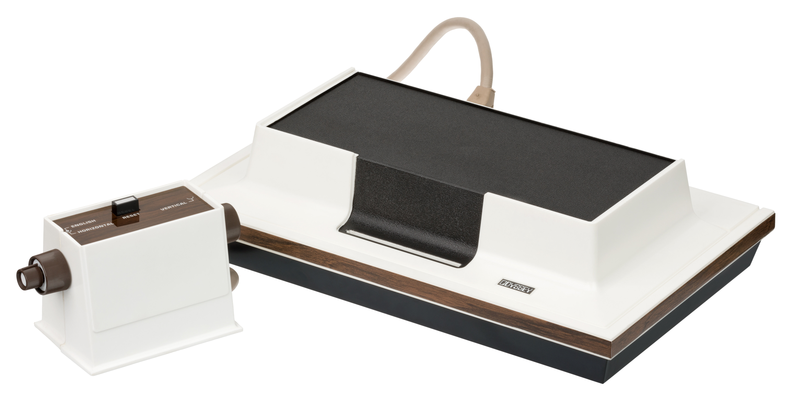
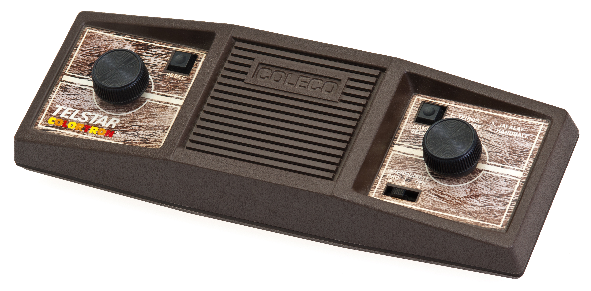
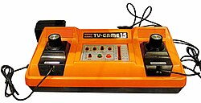

Gaming Consoles: A Digital Collection
First Generation (1972-1980)

magnavox odyssey
Title:
Magnavox Odyssey
Creator:
Magnavox
Subject:
Video Game Console
Type:
Physical Object
Release Year:
September 1972
Description:
The first home video game console ever released to the public
Format:
Analog console
Identifier:
Gen1=001
Rights:
Copyright and trademark owned by Magnavox
Relation:
First Generation Console

Coleco Telstar
Title:
Coleco Telstar
Creator:
Coleco
Subject:
Video Game Console
Type:
Physical Object
Release Year:
1976
Description:
Created as a home gaming system for a pong clone, 14 versions were created with varying games for each version
Format:
Dedicated console
Identifier:
Gen1-002
Rights:
Copyright and trademark owned by Coleco
Relation:
First Generation Console

Nintendo Color TV-Game
Title:
Nintendo Color TV-Game
Creator:
Nintendo
Subject:
Video Game Console
Type:
Physical Object
Release Year:
1977
Description:
The first console produced by Nintendo, acting as a pong-clone based console
Format:
Dedicated console
Identifier:
Gen1-003
Rights:
Copyright and trademark owned by Nintendo
Relation:
First Generation Console